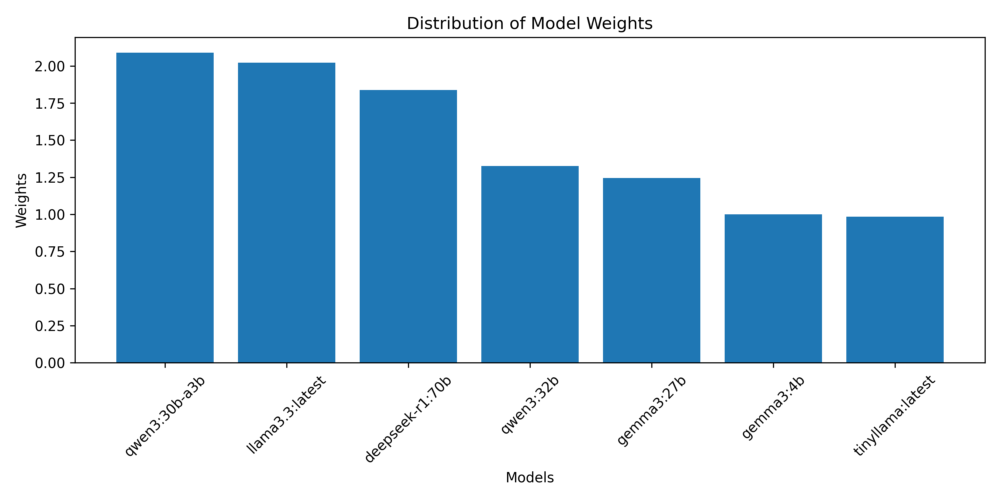

Prompt: Tell me your best joke
azure-gpt-4-omni:
Duration: 1.0222949981689453s
Latency: 0.5
Accuracy: 0.9983411989198255
Quality: 0.9983411989198255
Token: 0.0
Laura: 0.24839523434638977
Weight: 2.9934728665324304
Place 0: Why don't skeletons fight each other?
They don't have the guts!
llama3.3:latest:
Duration: 4.621909141540527s
Latency: 0.039165722796764356
Accuracy: 0.9918374288468401
Quality: 0.9918374288468401
Token: 0.0
Laura: 0.14061710238456726
Weight: 2.304074785259579
Place 1: Here's one that's often well-received:
A man walked into a library and asked the librarian, "Do you have any books on Pavlov's dogs and Schrödinger's cat?"
The librarian replied, "It rings a bell, but I'm not sure if it's here or not."
How was that? Do you want to hear another one?
qwen3:30b-a3b:
Duration: 11.562288761138916s
Latency: 0.0016588010801744217
Accuracy: 0.9608342772032357
Quality: 0.9608342772032357
Token: 0.0
Laura: 0.1562226116657257
Weight: 2.2357725788180973
Place 2:
Okay, the user asked for my best joke. Hmm, I need to think of a good one. Let me recall some classic jokes. Maybe a pun? Puns are usually safe and can be funny.
Wait, what's the structure of a good joke? It should have a setup and a punchline. The punchline needs to be unexpected but make sense. Let me think of some topics. Maybe something related to everyday situations.
How about a joke about a chicken? Classic, but maybe too cliché. Or something with a play on words. Like "Why don't scientists trust atoms?" Because they make up everything. That's a classic one. But is that the best?
Alternatively, maybe a joke that's a bit more original. Let me think. Maybe something with a twist. For example, a joke that plays on a common phrase. Like "Why did the scarecrow win an award? Because he was outstanding in his field." That's another classic.
Wait, the user might have heard these before. Maybe I should come up with a new one. Let me try. What if I make a joke about a computer? Like, "Why did the computer go to the doctor? It had a virus." Hmm, that's a bit basic.
Or maybe a joke that's a play on words with a twist. Let's see. "Why don't skeletons fight each other? They don't have the guts." That's another classic. Maybe I should go with one of these, but the user might be looking for something fresh.
Alternatively, think of a situation where the punchline is a double meaning. For example, "I told my computer I needed a break, and it said, 'You've got to be kidding, I'm already on a byte.'" Wait, that's a play on "byte" and "bite." Maybe that's okay.
But I should check if that's a known joke. If it's not, then it's better. Let me think again. Maybe something with a pun on a common phrase. "Why did the math book look sad? Because it had too many problems." That's a good one.
Alternatively, "What do you call a fake noodle? An impasta." That's a play on "imposter" and "pasta." Maybe that's funny. But I need to make sure it's not too obscure.
Wait, the user might be looking for something that's not too cheesy. Let me try to come up with a new one. How about a joke that's a riddle? "What has keys but can't open locks? A keyboard." That's a classic riddle joke.
But I think the user would appreciate a good pun. Let me go with the one about the chicken crossing the road. Wait, that's the classic "Why did the chicken cross the road? To get to the other side." But that's so overused. Maybe not the best choice.
Alternatively, a joke with a twist. "I told my wife she was drawing her eyebrows too high. She looked surprised." That's a play on "draw" and "drawn." Maybe that's funny.
Alternatively, "Why did the bicycle fall over? Because it was two-tired." That's a play on "tired" and "two tired." Classic pun.
I think I'll go with the "Why don't scientists trust atoms?" joke because it's a well-known pun and it's concise. But I should make sure it's presented in a friendly way. Let me check the delivery. "Why don't scientists trust atoms? Because they make up everything!" Yes, that's good. It's a play on "make up" as in "compose" and "fabricate." The humor comes from the double meaning. That should work.
Here's a classic with a twist:
**"Why don't scientists trust atoms?**
*Because they make up everything!*"
üòÑ Let me know if you want a more *original* one‚Äîthough I‚Äôll admit, this one‚Äôs been around longer than my coffee stash.
deepseek-r1:70b:
Duration: 10.857300281524658s
Latency: 0.008162571153159891
Accuracy: 0.8320183851339245
Quality: 0.8320183851339245
Token: 0.0
Laura: 0.21309280395507812
Weight: 2.098384949331165
Place 3:
Sure, here's a light-hearted one:
Why don’t skeletons fight each other?
Because they don‚Äôt have the *guts*! üßõ‚ôÇÔ∏è
Let me know if you'd like another!
gemma3:27b:
Duration: 7.285722732543945s
Latency: 0.8320183851339245
Accuracy: 0.16798161486607552
Quality: 0.16798161486607552
Token: 0.0
Laura: 0.20783710479736328
Weight: 1.583655824460802
Place 4: Okay, here's one of my favorites - it's a bit silly!
Why don't scientists trust atoms?
... Because they make up everything!
üòÇ
I hope that gave you a little chuckle! As an AI, I don't *feel* humor, but I'm programmed to recognize what humans generally find funny. Let me know if you'd like to hear another one!
o3-mini:
Duration: 5.101602792739868s
Latency: 0.9608342772032357
Accuracy: 0.039165722796764356
Quality: 0.039165722796764356
Token: 0.0
Laura: 0.24918513000011444
Weight: 1.5375359827969932
Place 5: Here's one of my favorites:
Two atoms are walking down the street. One suddenly exclaims, "Oh no, I lost an electron!"
The other asks, "Are you positive?"
Hope that charged up some laughter!
gemma3:4b:
Duration: 3.910108804702759s
Latency: 0.9983411989198255
Accuracy: 0.0016588010801744217
Quality: 0.0016588010801744217
Token: 0.0
Laura: 0.2020956575870514
Weight: 1.4058501162542771
Place 6: Okay, here’s one I think is pretty good:
Why don't scientists trust atoms?
... Because they make up everything! üòÑ
---
Would you like to hear another one?
qwen3:32b:
Duration: 46.5656099319458s
Latency: 0.16798161486607552
Accuracy: 0.5
Quality: 0.5
Token: 0.0
Laura: 0.11822597682476044
Weight: 1.4044335685155964
Place 7:
Okay, the user asked me to tell my best joke. I need to come up with something that's both clever and relatable. Let me start by recalling common joke structures—puns, wordplay, situational humor.
Hmm, maybe a pun involving a play on words. Let's see... Maybe something with a computer or tech theme since that's my area. How about "Why did the computer go to therapy? It had too many bytes of emotional baggage." Wait, that's a bit forced. Maybe there's a better one.
Another angle: animals. Kids love animal jokes. "Why don't scientists trust atoms? Because they make up everything." Oh, that's a classic. But maybe too well-known. The user might want something original.
Let me think about combining elements. Maybe a pun with a twist. "Why did the programmer quit his job? He didn't want to deal with all the bugs." That's good, but again, pretty common. How can I make it more unique?
What about a play on words with "break" and "debugging"? "Why do programmers prefer dark mode? Because light attracts bugs." Wait, that's clever. But maybe not funny enough. Let me try another approach.
How about a knock-knock joke? They can be simple but effective. Let me try: Knock knock. Who's there? Bo. Bo who? Bo-o-o, that’s how you pronounce it. No, that's not it. Maybe "Boo" joke. Knock knock. Who's there? Boo. Boo who? Don't cry, it's just a joke! Hmm, classic but maybe too basic.
Wait, the user might appreciate something with a bit more creativity. Let me think of a scenario. Maybe a play on words with "time" and "clocks." "Why did the clock get arrested? It was ticking off the law." Not great. Maybe another angle.
How about something with a twist ending? Like a setup and punchline. "I told my plants I love them, and now they won't stop talking to me. They’re really branching out." That's a pun on "branching out" meaning plants growing and people expanding their activities. It's a bit of a stretch but might work.
Wait, another idea: "Why don't skeletons fight each other? They don't have the guts." Classic, but maybe too common. I need something original. Let's try combining elements. Maybe a tech pun with a twist. "Why did the developer go broke? Because he used up all his cache." Cache as in money (cash) and caching in programming. That's a good one. It's a play on words between cash and cache. Let me check if that's already a joke. If not, that could work.
Alternatively, "Why did the database administrator get kicked out of the bar? Because he didn't have a primary key." Primary key is a database term, and "key" in the context of a bar... Hmm, not quite. Maybe "He didn't have a license to query." No, that's not it.
Back to the cache joke. "Why did the developer go broke? Because he used up all his cache." That's a solid pun. It's relatable for someone familiar with programming terms and the wordplay on cash. It's concise and has a good punchline. I think that's a strong candidate. Let me make sure there's no better one. Maybe another example: "Why do Java developers wear glasses? Because they can't C#." Oh, that's a classic programming joke. But maybe the user wants something different.
Alternatively, "Why did the function break up with the variable? It said they were too dependent." That's a bit abstract. Maybe not as funny.
I think the cache joke is the best here. It's a clever play on words and ties into the tech world, which might resonate well. Let me present that as the best joke.
Here's a joke that combines a bit of tech humor with a classic pun:
**"Why did the developer go broke?**
**Because he used up all his cache!**
*(Cash vs. cache ‚Äì a programming term for stored data!)* üòÑ"
It’s a play on words between "cash" (money) and "cache" (a concept in computing), making it both clever and relatable for those with a tech background. Plus, it’s short and has a satisfying punchline! Let me know if you want more.
tinyllama:latest:
Duration: 1.9463024139404297s
Latency: 0.9918374288468401
Accuracy: 0.008162571153159891
Quality: 0.008162571153159891
Token: 0.0
Laura: 0.18614250421524048
Weight: 1.3804475795836408
Place 8: Sure, here's my favorite joke:
Two old ladies were sitting in a park, chatting away when they noticed a group of kids playing in the park. One lady asked another, "Why are those kids playing so loudly?" Another lady replied, "I don't know, but they sure are having fun!" One of the little kids then walked up to the two ladies and said, "Sorry mums, but I need a ride home. Are you gonna let me on my bike, or do I have to walk?" The two ladies laughed as one lady got out of her chair and opened her arms to receive the little kid's bike.
Expecting nothing but laughter, she was amazed when the little guy happily rode off into the sunset. As she watched from afar, she heard him say, "Hey mums! I'm going on my bike!" And as he pedaled off down the street, she said, "See? Moms, we can do anything together!"
That was one of the best jokes ever! Enjoy your park day with your kids.
LLM Weights
